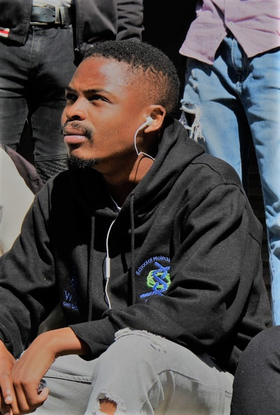

Technical Expertise
Web development
Technologies I can use:
HTML5 / JavaScript / TypeScript / CSS3 (This is the part that makes the site look pretty). This includes React, Blazor, Knockout.js, Angular, GraphQL, Bootstrap, Razor and jQuery to create interactive, responsive and user-friendly web applications.
Microsoft .NET and C# with ASP.NET Core, MVC and Web Forms (This is the part that links the database to the front end of the website). I design and build secure RESTful APIs, set up sign-in with OAuth 2.0 and Keycloak, and move older monolithic systems to microservices.
Microsoft SQL Server using Entity Framework (This is the database that stores information for our websites). I also use PostgreSQL and Firebase as the backend of web applications.
Mobile Development
Technologies I can use:
Flutter (This is used to create cross platform applications for Android, iOS, Web and desktop). Using the Dart programming language to implement logic.
React Native with Expo (This is used to build one app for both Android and iOS in TypeScript).
Kotlin, Java and Android Studio (This is mainly used to create Android platform specific applications). I can use XML to create user interfaces and SQL databases to store the information an application uses.
I can use Firebase for the backend of mobile applications, for data storage, third party authentication and more.
Cloud & DevOps
Technologies I can use:
Microsoft Azure (App Services, Storage and Application Insights for monitoring) and AWS (Lambda functions and DynamoDB).
CI/CD pipelines in Azure DevOps and GitHub Actions for automated builds and deployments, and Docker to keep every environment the same.
Unit and integration testing, working in Agile/Scrum teams.
My Background *Work Experience*
Developer From Cape Town
I'm a full-stack developer with over five years of experience designing, building and scaling web and mobile applications. I hold a Bachelor of Science from the University of the Witwatersrand and a National Certificate in Information Technology (Systems Development).
My core expertise is full-stack web development, custom software and database design, and cross-platform mobile development for iOS and Android. I enjoy taking a digital product from the first idea all the way to deployment.
I work well in collaborative, cross-functional teams where clear communication and a focus on quality lead to good outcomes. I am willing to listen, read and learn new things, I am good at meeting deadlines, and I believe that curiosity and consistent effort are the foundation of lasting work.
Education
Hillbrow Senior Secondary School 2016 (Matric)
University of The Witwatersrand Bachelor of Science 2017-2019
SAQA ID 48872, National Certificate: Information Technology (Systems Development) NQF Level 5 2020-2021
Microsoft Certified: Azure Fundamentals
HackerRank Certificate for Problem Solving (Basic)Google Developer Certification for Android Development
FreeCodeCamp Responsive Web Design Certificate
FreeCodeCamp JavaScript Algorithms and Data Structures Certificate
Front End Libraries Certificate
Key Skills
- .NET and API Design
- Legacy Modernisation
- Time Management
- Detail-Oriented and Results Driven
- Project Planning
- Teamwork and Mentoring
- Critical thinking
Interests & Hobbies
- Artificial Intelligence
- Charity
- Chess
- Digital Marketing
- Reading and Writing

Work Experience
Development Methods & Tools
Agile/Scrum | Test Driven Development (TDD) | Object-Oriented Design & Development | CI/CD | Microservices
CrimeS!gnal
Founder
September 2026 - *Current.
CrimeS!gnal is a South African safety alerts and incident management app for people, communities and organisations. It is trying to help fight South Africa's high crime rate by getting citizens involved in the fight. With one tap, someone in danger can reach the people they trust and the community around them. Security companies, estates, schools and businesses can manage incidents with it too.
• Ownership: I own the company (registered in October 2026) and build the app with help from former associates from the Younglings tech programme hackathons. The idea grew from a 2020 hackathon project, and the app has been live at www.crimesignal.co.za since 26 September 2026.
• Web and mobile: I designed and built the web app in TypeScript and React, and the Android and iOS app in React Native with Expo, kept light on data for people on prepaid bundles and older phones.
• Backend and cloud: I built the Node.js and Express backend with a PostgreSQL database on AWS, including push alerts, a loud alarm for emergencies, and queued delivery so alerts still go out under load.
• Data and quality: The crime map uses official SAPS crime figures that update themselves every week. Every change goes through type checks, linting, automated tests and a manual regression walk before release.
Morae
Senior Associate
June 2026 - *Current.
Software engineer with a strong focus on .NET development and API design.
• I build robust, scalable back-end solutions and well-structured RESTful APIs that drive integrations and business value.
• I maintain and modernise legacy .NET systems, leading migrations from monolithic applications to a microservices architecture to improve scalability, resilience and maintainability.
NML
Developer
March 2022 - May 2026.
As a full-stack developer I built and maintained web applications, modernising legacy systems and adding new, scalable solutions across the whole stack.
• Core development and modernisation: I moved legacy platforms from ASP.NET Web Forms to modern frameworks like MVC and Blazor, refactoring complex business logic so it could be tested. I contributed to the move from a monolith to microservices, which improved scalability and made deployments safer.
• Front end and user experience: I built dynamic, responsive interfaces using React, Knockout.js and Blazor that work well on every device.
• Security and API integration: I implemented OAuth 2.0 with Keycloak for authentication and role-based access control (RBAC), and built and consumed secure RESTful APIs between the front-end applications and the backend services.
• DevOps and collaboration: Working in Agile/Scrum teams, I helped set up CI/CD pipelines in Azure DevOps for automated builds and deployments. I kept up unit and integration tests and used Docker to keep environments consistent.
• Cloud and monitoring: I managed and optimised Azure resources (App Services, Storage) and used Application Insights for performance monitoring and production diagnostics.
Younglings Africa
Software Developer & Mentor
April 2021 - March 2022.
Younglings Voluntary Association is a non-profit organisation that creates an environment for young people who want to become software developers and are passionate about the craft.
• E-learning app: I designed and built a cross-platform e-learning mobile app in Flutter and Dart, with AI-powered voice recognition to help early learners with reading and comprehension. It placed 3rd in the national Youth Innovation Hackathon (June 2021) for its accessibility and creative use of technology.
• Location-based login: I built a location-based authentication system in ReactJS using the HTML5 Geolocation API, with token validation that only lets users sign in from pre-approved areas. Administrators could see logins and locations in real time.
• Mentoring: I mentored six junior developers during a 3-month internship, with hands-on guidance in clean code, Agile/Scrum, Git and systematic debugging, backed by peer code reviews.

Alyx Custom Software
Consultant (Remote) {Contract Ended}
June 2021 - November 2021.
I led the front-end development of cross-platform mobile and web applications for Indalo Bio, a laboratory working in the fight against Covid-19.
• I developed three mobile apps (Flutter and Kotlin) and one web app (ReactJS with Redux and Material UI), and turned stakeholder requirements into high-fidelity prototypes in Figma. The Kotlin app was for a barcode generating and scanning device.
• I worked with the backend and DevOps teams to connect the apps to REST and SOAP APIs built on AWS Lambda functions, and set up Firebase Authentication.
• The apps used a microservices architecture so patient data could be managed securely and the system could be deployed and maintained quickly. See alyx.co.za and indalo.bio for more.
Cape Innovation and Technology Initiative (CiTi, CapaCITI Tech Career Accelerator)
Junior Software Developer, Learnership {Contract Ended}
April 2020 - April 2021.
My first year in tech, in a learnership role.
• As team lead of 8 developers we built a native Android app (Java) and a web app (PHP) for a candidate management system that automated attendance tracking.
• With a team of 4 developers I helped refactor and maintain the BASF Quality Assurance web application in ASP.NET MVC, C# and SQL Server (Entity Framework), including Facebook and Google sign-in through REST APIs. I also helped write its documentation.
• I deployed and monitored applications on Microsoft Azure with cross-functional teams.

For more of my projects, click on my Github link below